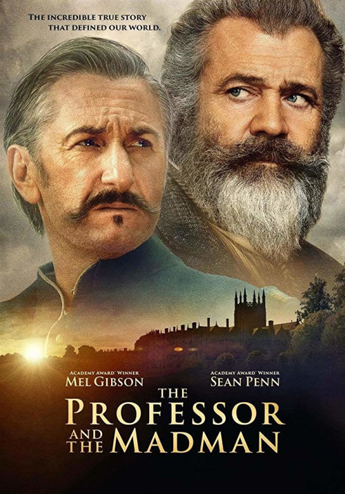

The Professor and the Madman Продолжительность: 124 мин. Жанр: Биография, Драма, Детектив, Триллер. Страна: Ирландия. Режиссер: Фарад Сафиниа. Сценарий: Джон Бурмен, Тодд Комарницки ... » Продюсеры: Николя Картье, Брюс Дэвей ... » Оператор: Kasper Tuxen. Композитор: Беар МакКрири. Бюджет: 25,000,000 $.
Англия середины XIX века. Оксфордский профессор Джеймс Мюррей работает над первым в истории словарем английского языка, а его главным соратником становится заключенный психиатрической клиники для особо опасных преступников - доктор Уильям Майнор. Гений Майнор или сумасшедший, хитроумный преступник, ведущий дерзкую игру, чтобы вырваться на свободу, или одержимый ученый? И кто тогда Мюррей: верный друг, жертва манипуляции или организатор сговора?
В ролях: Натали Дормер, Мэл Гибсон, Шон Пенн, Дженнифер Или, Йоан Гриффит, Джереми Ирвин, Adam Fergus, Брендан Патрикс, Брайан Форчун, Дэвид Краули, Киран О`Рейли, Кристофер Малеки, Bryan Quinn, Брайан Мюррэй, Steve Gunn ... »
Комментарии
Мощный фильм.Казалось бы не такая уж и интересная история,но как снято, как держит до конца. Это вам не это..
Биткоиннразум
фильм ОТЛИЧНЫЙ , актеры СУПЕР , смотрится ИНТЕРЕСНО , я лично РЕКОМЕНДУЮ ! :-)
СтоунВ этом фильме прекрасно абсолютно всё! В коллекцию! Ну, а Мистера Пенна ждет Оскар, я думаю!
ChefSergey